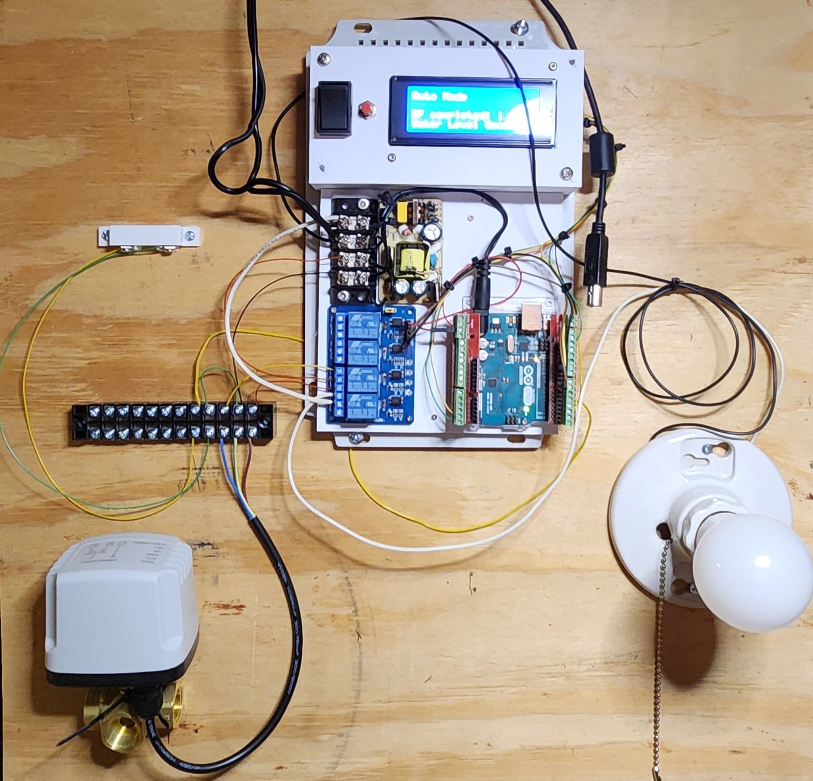
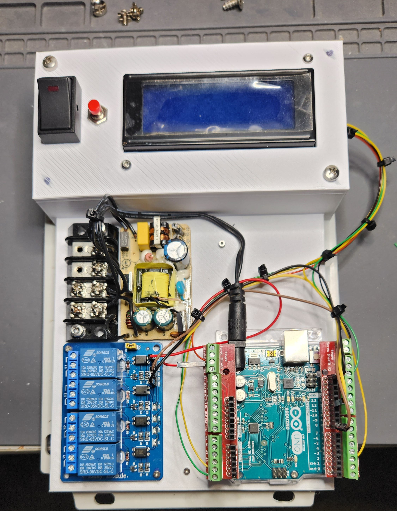

I started this project to help my father keep track of his camper’s water supply. My father had to check the water level every morning and make sure the flow from the spring hadn’t stopped. If the flow stopped, he would need to manually insert a water house into the pipe and Back flush the water lines to rid any sand that may have stopped up the line. We installed screens at the spring house to help catch most of the sand but some would still make it through. The lines would also become airlocked (I have a plane for this) and the backflushing would rid the lines of this blockage.
The system is designed to monitor the water level in the spring house and the flow of water from the spring. The system will also back flush the water lines if the flow stops. The system will also alert the user if the water level is low or if the flow has stopped
Utilizing an Arduino as the brain, the system monitors the water level and flow via a tilt switch, float, and a water flow sensor. When the water level falls low enough the tilt switch makes contact and the water level input pin on the Arduino is pulled low. This pin is read by the Arduino, relay 1 is then activated thus activating a servo that switches the position of a 3-way water valve blocking flow into the holding tank and opening access to the water lines. Five seconds later the Arduino activates relay 2 turning on a pump. This pump feeds water back into the water line backflushing the lines and removing all sand and airlocks. After running for one minute relay 2 deactivate turning off the pump. After 5 seconds relay 1 deactivates, this activates the 3-way water valve moving it back into its home position allowing water from the spring to once again flow into the holding tanks. The system also has a manual mode where at any time the sequence of operation can be performed when desired.
 